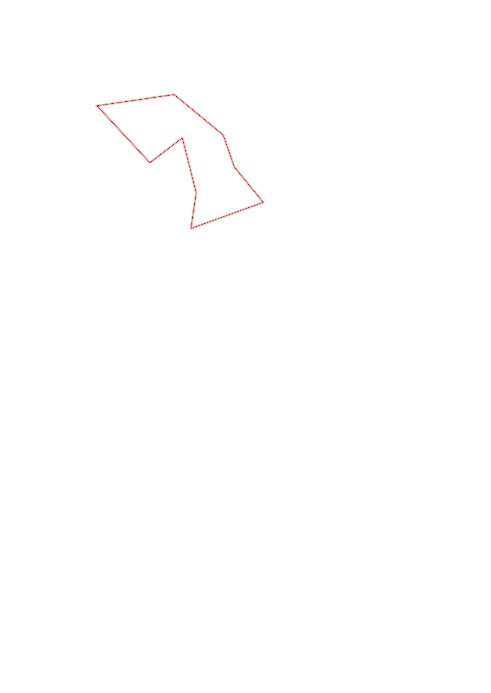
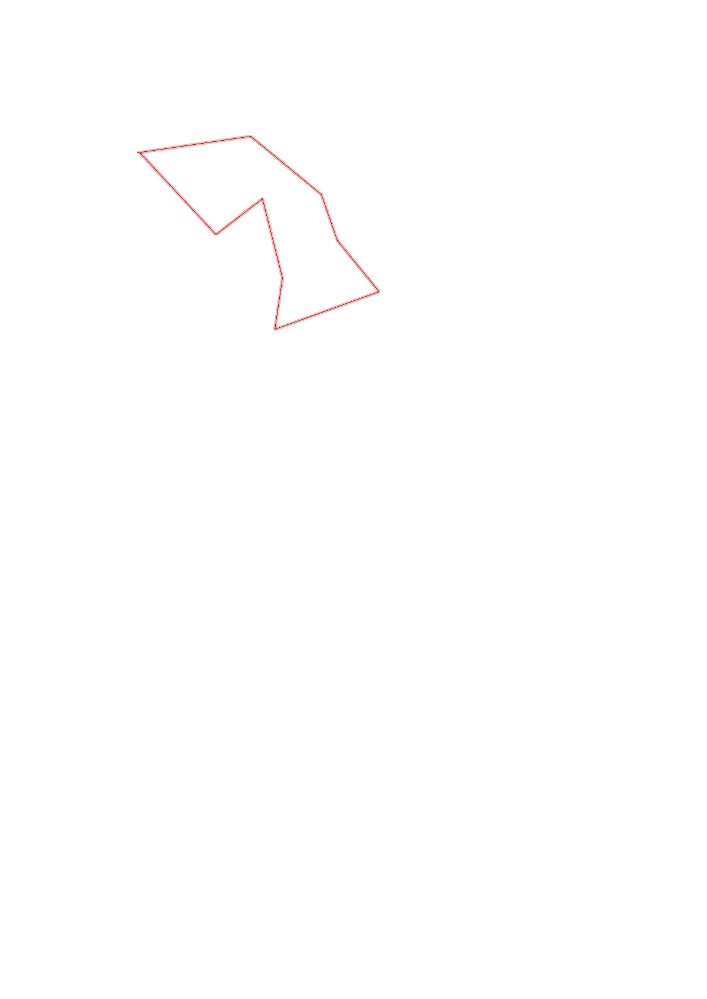

| Control |
Points |
Time Punched |
Distance |
Your Time |
Pace |
Place |
Fastest Time |
Median Time |
% Behind Fastest |
| 33 |
30 |
|
0.49 |
0:03:13 |
06:33 |
2 / 8 |
0:02:06 |
0:03:23 |
53% |
| 57 |
50 |
|
0.39 |
0:06:23 |
16:22 |
4 / 5 |
0:05:22 |
0:06:02 |
18% |
| 52 |
50 |
|
0.21 |
0:04:50 |
23:00 |
5 / 7 |
0:04:11 |
0:04:44 |
15% |
| 63 |
60 |
|
0.28 |
0:03:43 |
13:16 |
4 / 7 |
0:02:58 |
0:03:43 |
25% |
| 43 |
40 |
|
0.47 |
0:07:12 |
15:19 |
2 / 3 |
0:06:31 |
0:07:12 |
10% |
| 95 |
90 |
|
0.22 |
0:15:24 |
1:10:00 |
5 / 5 |
0:01:04 |
0:05:07 |
1343% |
| 32 |
30 |
|
0.35 |
0:05:10 |
14:45 |
1 / 1 |
0:05:10 |
0:05:10 |
0% |
| 42 |
40 |
|
0.25 |
0:03:02 |
12:08 |
1 / 2 |
0:03:02 |
0:18:34 |
0% |
| Finish |
0 |
|
0.47 |
0:03:20 |
07:05 |
6 / 9 |
0:02:13 |
0:03:12 |
50% |
Total Distance Covered: 3.13km
Points Scored: 390
Late Penalty: 0
Final Score: 390
Total Time: 0hours 52minutes 17seconds
Efficiency: 124.6 points/km
 
